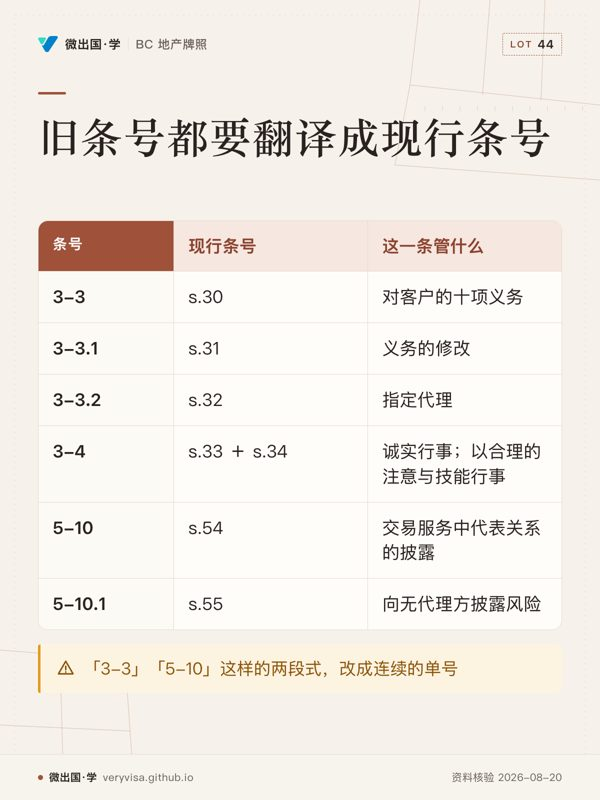

🃏 Flashcards · 3 闪卡 · 3 张 🖼 Slides · 2 幻灯 · 2 页 ✍️ Questions · 14 刷题 · 14 道
代理法与交易合同 agency-contracts P1 必拿分 P1 Must score
ZH EN ZH + EN
先看这一章怎么考 First, how this chapter is tested
情景定性题：给出持牌人与买卖双方的互动细节（如在开放日询问买家预算、给无代理买家出价建议、代客户签字未拿书面授权），考你识别是否触发隐含代理（implied agency）、禁反言（estoppel）或违反授权担保（warranty of authority）。 Scenario-classification questions give the details of a licensee's dealings with buyers and sellers (for example, asking a buyer's budget at an open house, advising an unrepresented buyer on an offer price, or signing for a client without written authorization) and test whether you can tell if the facts trigger implied agency, estoppel, or a breach of the warranty of authority. 冲突与瑕疵应对题：设置两名当前客户争夺同一房源、前客户出现在交易对面、或卖方要求隐瞒重大隐蔽瑕疵（material latent defect）等两难场景，考你按规则选出唯一合规动作（如全部停止服务、三方签署客户间利益冲突协议、或拒绝隐瞒并退出交易）。 Conflict and defect questions set up dilemmas such as two current clients competing for the same property, a former client appearing on the other side of the trade, or a seller demanding that a material latent defect be concealed. They test whether you pick the only compliant action under the rules, such as stopping service for everyone, having all three parties sign an agreement regarding conflict of interest between clients, or refusing to conceal the defect and withdrawing from the trade. 披露触发与方式题：针对代表关系（s.54）、无代理方风险（s.55）、推荐费（s.56）、向卖方披露预期酬金（s.57）、买家撤销权（s.57.1）及合同转让通知（规例 s.8.2），考你在什么时点、向谁、以什么形式（书面且独立于合同）作出披露。 Disclosure-trigger and method questions cover representation (s.54), risks to an unrepresented party (s.55), a referral fee (s.56), disclosure of expected remuneration to the seller (s.57), the buyer's right of rescission (s.57.1), and notice of assignment terms (Regulation s.8.2). They test when, to whom, and in what form (in writing and separate from the contract) the disclosure must be made. 最常丢分的陷阱（看到题干信号就警觉） Traps that cost the most marks (watch for the signal in the stem)
无代理方越界陷阱 Unrepresented-party overstep trap 题干出现「unrepresented party / non-client」「open house」「asks for advice on price or terms」「helps negotiate」等词。 The stem uses words such as "unrepresented party / non-client", "open house", "asks for advice on price or terms", or "helps negotiate". 保密与瑕疵混淆陷阱 Confidentiality and defect mix-up trap 题干同时出现「material latent defect」与「seller instructs the licensee not to disclose / keep it confidential」。 The stem contains both "material latent defect" and "seller instructs the licensee not to disclose / keep it confidential". 客户冲突处置陷阱 Client-conflict handling trap 题干描述「two existing buyer clients want the same property」或「a buyer client wants to offer on a seller client's listing」。 The stem describes "two existing buyer clients want the same property" or "a buyer client wants to offer on a seller client's listing". 本章考点页：导图、要点表、7 道带逐项解析的练习 →
核实日期：2026-09-05。 本篇的法条一律回 BC Laws 现行文本核过：
《地产服务规则》（Real Estate Services Rules）现行版 B.C. Reg. 209/2021，
2021-08-01 生效，此后多次修订（2024-07-01 的 B.C. Reg. 101/2024 改了关系人与配偶定义；BC Laws 所列最近一次是 2026-10-13 的 B.C. Reg. 84/2026，改动第 10 条与第 56 条），网站合订本标注「current to 2026-10-27」；
《地产服务法》（RESA，SBC 2004 c. 42）同样合订至 2026-10-27。出处见文末源表。
这一章是全课时效风险最集中的一章。 旧版参考资料定稿于 2020 年，它引用的每一个规则条号在 2021-08-01 之后
都已作废，而 2023 年与 2024 年又各加了一批新义务。原理长青，条号与表格全变。
一、代理法在管什么：三个人、一个授权、一堆后果 本节回答 This section answers 解释代理三方关系、授权担保责任以及代客户签字的法定条件 Explain the three-party agency relationship, liability under the warranty of authority, and the statutory conditions for signing for a client.
代理关系（agency） 是一种法律关系：一个人——代理人（agent） ——被授权代表另一个人
——委托人（principal） ——与第三方打交道。落到本课的场景里，委托人就是客户（client，卖家或买家），
代理人就是持牌人及其所属的经纪行（brokerage），第三方就是交易对手方。
图：三个人、一个授权——谁替谁做事，谁就得对谁忠诚
三条基础规则读懂了，后面所有条文都会顺：
代理人有权把委托人「绑住」。 代理人在授权范围内做的事，法律后果落在委托人身上。代理人自己不是合同当事人。 代理人代签的合同，当事人是委托人与第三方，代理人在这份合同下
既无权利也无义务（法律上叫「无合同相互关系」，privity）。代理人向第三方默示地担保了自己有权这么做 ——即授权担保（warranty of authority） 。
越权行事，要对第三方承担违反授权担保的赔偿责任。
因为「替别人做决定」是一种很容易被滥用的权力，法律对代理人设了一整套义务，其中最重的一层叫
受托义务（fiduciary duties） ，核心是忠诚义务（duty of loyalty） ：只为委托人的利益行事，
把委托人的利益放在包括自己利益在内的一切人之前。这一条是整章的轴心，第七节展开。
⚠️
「代理」不是「中介」，差别在忠诚义务
中文里习惯把持牌人叫「中介」，这个词暗示的是「居间撮合、两边说和」。
法律上的代理恰恰相反：代理人只能站在一边 ，并且要为这一边争取最好结果。
「两边都照顾」在 BC 不是职业美德，2018-06-15 之后它是违规 （第六节）。
BC 的一个特殊之处：持牌人通常不能替客户签字
在很多行业的代理关系里，代理人有权代委托人签合同。BC 的地产交易代理默认没有这项权力 ——
挂牌合同授权持牌人做的是宣传、带看、把要约如实转达，签买卖合同的仍然是业主本人。
要取得代签权，必须走现行规则 s.45 ：签字之前必须先从客户（或客户的授权代理人）处取得书面授权 ；
该授权可以写在服务协议里，也可以另立一份文件。口头指示再清楚都不够。
代签时还有一个技术动作：签自己的名字，并在签名旁写明自己是以代理人身份代某人签署 。
直接摹写客户签名，或者签了却不注明代理身份，两种做法都可能让持牌人自己 成为合同当事人。
节末检索小测 · 先别往回翻，凭记忆作答 Quick recall check: answer from memory before scrolling back
A seller is travelling abroad without printer access and telephones his listing licensee, instructing her to sign a buyer's counter-offer on his behalf immediately. How must the licensee proceed under the Real Estate Services Rules?
一位卖家正在海外旅行且身边没有打印机，遂致电其挂牌持牌人，指示她立即代自己在买家的还价合同上签字。根据《地产服务规则》，该持牌人必须如何处理？
a Sign the seller's own name on the contract because the standard listing agreement already grants general signing authority. ✗ 属于「授权与签署形式陷阱」。在 BC，挂牌合同（listing agreement）默认不包含代客户签署买卖合同的权限，且代签时绝不能摹写客户本人的签名。 This is the authority and signing-form trap. In BC, a listing agreement does not by default include authority to sign a contract of purchase and sale for the client, and when signing for a client the licensee must never copy the client's own signature.
b Obtain written authorization from the seller before signing, and sign her own name while indicating she is signing as agent on the seller's behalf. ✓ 正确。依现行规则 s.45（旧版规则 5-3），持牌人代客户签字前必须先取得客户的书面授权（written authorization），且签署时必须签持牌人自己的名字并注明是以代理人身份（as agent）代委托人签署。 Correct. Under current Rule s.45 (former Rule 5-3), before a licensee signs for a client the licensee must first obtain the client's written authorization, and when signing must sign the licensee's own name and state that the licensee is signing as agent for the principal.
c Sign the counter-offer right away based on the clear oral instruction, provided she keeps a contemporaneous phone log for the brokerage file. ✗ 属于「授权与签署形式陷阱」。无论客户的口头指示（oral instruction）多么清楚，都不满足规则 s.45 必须在签字前取得书面授权的硬性要求。 This is the authority and signing-form trap. However clear the client's oral instruction is, it does not meet the strict requirement in Rule s.45 that written authorization be obtained before signing.
d Ask her managing broker to co-sign the counter-offer so that the brokerage assumes the warranty of authority without needing written client consent. ✗ 属于「授权与签署形式陷阱」。管理经纪（managing broker）联署并不能替代客户本人的书面授权，无书面授权代签依然违反 s.45 并可能触发违反授权担保（warranty of authority）的责任。 This is the authority and signing-form trap. A managing broker's co-signature cannot replace the client's own written authorization. Signing without written authorization still breaches s.45 and may trigger liability for breach of the warranty of authority.
看答案与每个选项的解析 Show the answer and why each option is right or wrong 答案 Answer ：b
二、BC 代理模式的四次变革：今天这套是怎么来的 本节回答 This section answers 梳理从推定卖方分代理到指定代理与禁止双重代理的演变逻辑 Trace the logic of the shift from assumed seller sub-agency to designated agency and the ban on dual agency.
理解现行规则最快的路，是看它是被什么问题逼出来的。
2018 年那次禁令的来路 ：2016 年 2 月，当时的监管机构成立了一个独立顾问小组
（Independent Advisory Group，IAG） 审查行业行为规范，同年 6 月出报告。报告的结论是：
有限双重代理是利益冲突的重大来源，忠诚义务在两个利益相冲突的客户之间根本无法同时履行 ，
其对消费者的风险大于它带来的便利。省政府据此修订规则，2018-06-15 生效。
指定代理为什么能解决前一代的问题 ：它把那一串「对客户的义务」从「经纪行及其全体持牌人」
收缩到「被指定的那一两个人」。于是同一家经纪行里甲代表卖方、乙代表买方不再构成冲突
——只要甲乙不是同一个人、也不在同一个注册团队里 。
ℹ️
佣金习惯没有跟着模式变
从 1994 年到今天，行业惯例一直是挂牌经纪行从卖方那里收到佣金后，分一部分给带来买家的合作经纪行 。
所以很多买家至今认为「买方不用付经纪费」。这只是一个合同安排，不是法律规定；
它带来的后果是买方代理人的报酬与成交价挂钩，本身就是一处结构性利益冲突（第八节）。
节末检索小测 · 先别往回翻，凭记忆作答 Quick recall check: answer from memory before scrolling back
Which structural problem under the 1994 assumed buyer agency model directly prompted the introduction of designated agency in British Columbia in June 2012?
1994 年推定买方代理模式下的哪一个结构性问题，直接促使 BC 省在 2012 年 6 月引入了指定代理模式？
a Every licensee brought in by a buyer was legally deemed to be a sub-agent of the seller, owing fiduciary duties exclusively to the seller. ✗ 属于「新旧版本与条号陷阱」。带买家的持牌人被推定为卖方分代理（assumed seller sub-agency）是 1994 年之前的问题，不是 1994 年至 2012 年期间的问题。 This is the old-versus-current version and section-number trap. Treating a licensee who brought a buyer as an assumed seller sub-agent was the problem before 1994, not the problem from 1994 to 2012.
b Agency duties were owed by the entire brokerage, meaning every licensee in a 50-person brokerage was legally an agent of every client of that brokerage. ✓ 正确。1994 年推定买方代理（assumed buyer agency）下，代理人仍是整家经纪行（brokerage），一家 50 人的经纪行里另外 49 名从未见过客户的持牌人在法律上也是该客户的代理人；2012 年 6 月引入指定代理（designated agency）正是为了把代理义务收缩到被指定的持牌人身上。 Correct. Under the 1994 assumed buyer agency model, the agent was still the whole brokerage. In a 50-person brokerage, the other 49 licensees who had never met the client were also that client's agents in law. Designated agency was introduced in June 2012 precisely to narrow agency duties to the designated licensee.
c Cooperating brokerages were prohibited from sharing commissions collected by listing brokerages unless both parties signed a dual agency agreement. ✗ 属于「新旧版本与条号陷阱」。从 1994 年至今，挂牌经纪行与合作经纪行分佣一直是行业合同惯例，并非引入指定代理的原因。 This is the old-versus-current version and section-number trap. From 1994 to today, sharing commission between the listing brokerage and a cooperating brokerage has been an industry contract practice. It was not the reason designated agency was introduced.
d Real estate teams were operating without registration and automatically binding all brokerage staff to represent unrepresented parties. ✗ 属于「新旧版本与条号陷阱」。地产团队（real estate teams）的法定注册规则是在 2023-04-01 才生效的，与 2012 年 6 月引入指定代理无关。 This is the old-versus-current version and section-number trap. The statutory registration rules for real estate teams took effect only on 2023-04-01. They have nothing to do with the introduction of designated agency in June 2012.
看答案与每个选项的解析 Show the answer and why each option is right or wrong 答案 Answer ：b
三、旧条号都要翻译成现行条号 本节回答 This section answers 辨识旧版两段式议会规则条号与现行单号规则及监管机构名称 Identify old two-part Council rule numbers, the current single-number rules, and the name of the regulator.
2021-08-01 起，规则整体换版重编号：旧的「地产议会规则（Council Rules）」被
B.C. Reg. 209/2021 取代，条号从「3-3」「5-10」这样的两段式，改成连续的单号「30」「54」。
旧版参考资料（©2020）里出现的每一个条号，在现行文本里都指不到东西 。
本章会用到的对照如下（左列是旧版写法，右列是 2026 年现行条号）：
还有两处措辞变了，含义跟着变：
旧版说这些表格是「议会规定（Council prescribed） 」的。现行条文一律写
「以总监批准的格式（in a form approved by the superintendent） 」——这里的总监
就是 BCFSA（BC Financial Services Authority，BC 金融服务管理局）。
旧版说双重代理的披露件要「交给议会」。现行 s.64(3) 是：经纪行须在与各方签署书面双重代理协议后
及时把披露件交给总监（BCFSA） 。
✕
先辨题干版本，现行题与实务引用现行条号
考试口径 ：以本人注册课程现行考纲及官方更新为准，旧条号与旧机构名只用于历史辨认。
实务口径 ：面对客户、写文件、跟管理经纪讨论，一律用现行法的条号与 BCFSA 这个名字。
给客户讲话时说「按议会规则 5-17」，对方去查会查不到——这不是措辞问题，是可信度问题。
节末检索小测 · 先别往回翻，凭记忆作答 Quick recall check: answer from memory before scrolling back
When comparing the 2020 course manual to the current Real Estate Services Rules (B.C. Reg. 209/2021), how has former Council Rule 3-4 (honesty and reasonable care and skill) been restructured, and whose approved forms are now used?
将 2020 版考试资料与现行《地产服务规则》（B.C. Reg. 209/2021）相比，原议会规则第 3-4 条（诚实及合理的注意与技能）在结构上发生了什么变化，且现行条文规定使用谁批准的表格格式？
a Rule 3-4 was split into s.33 (act honestly) and s.34 (reasonable care and skill), and forms are now approved by the superintendent. ✓ 正确。旧版考试资料使用 Council Rules 3-4 且称表格由议会规定（Council prescribed）；2021-08-01 起现行规则将其拆分为 s.33（诚实行事）和 s.34（以合理的注意与技能行事）两条独立条文，且表格一律改为以总监即 BCFSA 批准的格式（in a form approved by the superintendent）。 Correct. The old exam materials used Council Rules 3-4 and said forms were Council prescribed. From 2021-08-01, the current rules split that into two separate sections, s.33 (act honestly) and s.34 (act with reasonable care and skill), and forms must be in a form approved by the superintendent, that is, BCFSA.
b Former Rule 3-4 was merged into s.30 so that honesty and reasonable care apply only to clients, and forms are prescribed by the Real Estate Council. ✗ 属于「新旧版本与条号陷阱」。s.33 与 s.34 并未并入只针对客户的 s.30，而是独立适用于交易中的所有人，且「议会规定（Council prescribed）」已是作废的旧版表述。 This is the old-versus-current version and section-number trap. s.33 and s.34 were not folded into s.30, which applies only to clients. They stand alone and apply to everyone in the trade. Council prescribed is obsolete old wording.
c Former Rule 3-4 was renumbered as s.43, requiring written service agreements approved by the Independent Advisory Group. ✗ 属于「新旧版本与条号陷阱」。现行 s.43 对应的是旧版 5-1（书面服务协议），而独立顾问小组（IAG）只是 2016 年审查行业规范的顾问机构，并不负责批准表格。 This is the old-versus-current version and section-number trap. Current s.43 corresponds to former 5-1 (written service agreements). The Independent Advisory Group (IAG) was only an advisory body that reviewed industry standards in 2016. It does not approve forms.
d Former Rule 3-4 was repealed entirely when the dual agency ban took effect, leaving honesty governed solely by common law tort principles. ✗ 属于「新旧版本与条号陷阱」。诚实与合理注意义务并未被废止，而是拆分为现行规则 s.33 与 s.34 继续有效。 This is the old-versus-current version and section-number trap. The duties of honesty and reasonable care were not repealed. They were split into current Rules s.33 and s.34 and remain in force.
看答案与每个选项的解析 Show the answer and why each option is right or wrong 答案 Answer ：a
四、代理关系怎么成立，代理人的权限有多大 本节回答 This section answers 掌握代理成立四路径、授权分类、书面协议要件与三种挂牌合同 Master the four ways agency is created, the classes of authority, the requirements of a written agreement, and the three kinds of listing contract.
四条成立路径
明示合同（express） ——最常见，也是唯一安全的一条。口头也能成立，但应当写成书面。默示（implication） ——双方的行为 足以显示一方在替另一方行事，另一方接受了。
持牌人最容易在这条上出事（第六节的「隐含代理」）。禁反言（estoppel） ——委托人以言语或行为让第三方相信某人有权代表自己，第三方据此信赖并改变了处境，
委托人事后不得否认。三个要件缺一不可：表示、信赖、处境改变 。追认（ratification） ——代理人事先无权或越权，委托人事后同意受其约束，效果溯及既往。
持牌人不能指望这条：追认与否在客户手里，客户不追认，越权的那笔责任落在持牌人自己身上。
权限的两大类三小类
实际授权（actual authority） ——委托人真的给了：明示授权（express） ：合同白纸黑字写的；默示授权（implied） ：为完成明示授权所必需、且附随于它的行为；通常或惯例授权（usual / customary） ：该行业交易惯例中理所当然包含、且合法合理的行为。表见授权（apparent authority） ——委托人其实没给，但从委托人与代理人的言行看，
一个理性的第三方会认为给了。它实质上就是禁反言在授权范围上的运用。
书面服务协议：现行 s.43 要求写进去的东西
什么时候必须有书面协议 ：经纪行为业主提供交易服务、把房子挂出来卖（或其他处分）时，
除非客户明确放弃这项要求，必须 有书面服务协议，且必须在开始代表客户挂牌之前签好。
注意条文的范围——它写的是「为业主 提供交易服务」，代表买家的协议不在强制之列 ；
但审慎的做法是买卖两侧都签，很多经纪行的内部政策就是这么定的。
协议必须由客户与经纪行的授权签署人双方签字 ，并至少写明：当事人姓名与经纪行牌照名称、
物业地址、生效日、到期日 、服务的概括说明、酬金及其触发情形、以及个人信息如何使用与披露。
现行条文里有一层旧版清单没有的细化 ：如果服务协议约定挂牌经纪行会把一部分酬金分给合作经纪行，
协议里必须分别写清三笔数——卖方付给挂牌经纪行的 、挂牌经纪行付给合作经纪行的 、
挂牌经纪行自己留存的 ；如果没有合作经纪行，就写卖方付给挂牌经纪行的那一笔。
旧版列举协议要件时只写到「酬金及触发情形」，没有这一层三分 。
买方准备签服务协议时，可用论坛这份逐项核对表把授权、报酬与退出条件放在一起看：
在 BC 请买方经纪，签字前把授权、报酬和退出条件放在同一页 。
s.44 ：只要是书面协议，经纪行必须在签署后立即 把副本交给客户。房子由两人以上共有时，
每位业主各给一份。
三种挂牌合同：授权范围不同，付佣条件也不同
独家挂牌 （exclusive listing，BC 常见写法是「独家销售权」exclusive right to sell）：
期内成交就要付佣，哪怕买家是业主自己找到的 。多重挂牌 （multiple listing）是它的一种，
另加授权把房源放进 MLS 并与合作经纪行协作。公开挂牌 （open listing）允许业主同时委托多家，
只付给促成交易的直接原因 那一家；业主自行成交则一家都不付。
🔧
到期日不是装饰
现行 s.43(4)(d) 把「到期日」列为交易服务协议的必备项。一份没有明确到期日的挂牌合同，
在监管层面是不合规的，在民事层面是一场关于「到底代理到什么时候」的官司的种子。
节末检索小测 · 先别往回翻，凭记忆作答 Quick recall check: answer from memory before scrolling back
An owner enters into an open listing with three different brokerages to sell her commercial lot, and two weeks later she sells the lot directly to a neighbour who saw her personal social media post without any licensee's involvement. Which brokerage is entitled to a commission?
一位业主就其商业地块与三家不同的经纪行签订了公开挂牌合同；两周后，她通过自己的社交媒体帖子直接把地块卖给了邻居，全程没有任何持牌人参与。哪一家经纪行有权收取佣金？
a The brokerage that signed the earliest open listing agreement with the owner is entitled to the full commission. ✗ 属于「授权与签署形式陷阱」。公开挂牌（open listing）不按签约先后付佣，只付给成为促成交易直接原因（effective cause of the sale）的那一家经纪行。 This is the authority and signing-form trap. An open listing does not pay commission by who signed first. It pays only the brokerage that is the effective cause of the sale.
b All three brokerages are entitled to split a customary commission equally under quantum meruit. ✗ 属于「授权与签署形式陷阱」。合理报酬原则（quantum meruit）仅在构成应得报酬但未约定具体金额时由法院裁量，公开挂牌下未促成交易的经纪行无权分佣。 This is the authority and signing-form trap. Quantum meruit is used by a court only when remuneration is earned but no specific amount was agreed. Under an open listing, a brokerage that did not cause the sale has no right to share the commission.
c None of the brokerages is entitled to a commission because the owner found the buyer herself under an open listing. ✓ 正确。在公开挂牌（open listing）下，业主允许同时委托多家经纪行，只向促成交易的直接原因那一家付佣；若业主自行找到买家成交，则一家都不必付。只有独家挂牌（exclusive listing）或多重挂牌（multiple listing）才会在业主自售时仍触发付佣义务。 Correct. Under an open listing, the owner may engage several brokerages at once and pays only the one that is the effective cause of the sale. If the owner finds the buyer and completes the sale personally, none of them is paid. Only an exclusive listing or a multiple listing still triggers commission if the owner sells it personally.
d Whichever brokerage spent the most money advertising the property is entitled to reimbursement of expenses plus a reduced fee. ✗ 属于「授权与签署形式陷阱」。除非合同另有约定，地产代理被视为已放弃要求委托人补偿垫付费用（reimbursement of expenses）的共同法权利，且公开挂牌未促成交易无权收佣。 This is the authority and signing-form trap. Unless the contract says otherwise, a real estate agent is treated as having given up the common-law right to claim reimbursement of expenses from the principal. Under an open listing, a brokerage that did not cause the sale has no right to commission.
看答案与每个选项的解析 Show the answer and why each option is right or wrong 答案 Answer ：c
五、怎么终止，以及终止之后还剩什么 本节回答 This section answers 判断代理终止的三种路径、违约代价及终止后永久保留的保密义务 Judge the three ways an agency ends, the cost of a breach, and the duty of confidentiality that remains permanently after termination.
代理关系建立在双方合意之上，任何一方随时可以终止 ，终止之后授权即告撤销。三条路径：
明示终止 ——口头或书面直接说，也叫撤销代理权。行为终止 ——一方的行为与继续代理不相容。最常见的是物业成交 ：挂牌期还剩七周，
房子卖掉了，代理关系随之结束。法律运作 ——合同中的条款，或任何一方死亡、丧失行为能力、破产。
能终止不等于终止没有代价。 挂牌合同是合同，业主在挂牌期内单方终止，经纪行可以就
广告费、包装费乃至预期佣金主张违约损失。标准挂牌合同一般自带终止条款，典型的六种情形是：
期满、双方书面提前同意、物业成交、挂牌经纪行牌照被吊销或暂停、挂牌经纪行破产或被接管、
以及因当前客户之间的利益冲突而按现行 s.65 不得继续提供服务；并写清终止后要做的动作：
撤下 MLS 活跃房源、停止推广、拔掉标牌、按业主要求退回资料。
终止之后仍然留着两样东西 ：
表见授权的余威。 如果双方行为仍让第三方以为代理还在，第三方的信赖可能通过禁反言
把委托人绑住。所以委托人通常需要通知与代理人打过交道的第三方。持牌人这一侧的动作是
实际拔掉标牌、撤掉广告、交还钥匙——做，而不是只在邮件里说 。保密义务。 这一条不随交易结束而结束。BCFSA 在其代理指引里的原话是：
在对客户的全部代理义务里，保密是唯一永久延续的一项 。第八节讲它怎么反过来限制你。
节末检索小测 · 先别往回翻，凭记忆作答 Quick recall check: answer from memory before scrolling back
Two years after a residential sale completes and the agency relationship has terminated, the former seller client's ex-business partner asks the licensee why the seller had been so desperate to sell back then. What is the licensee's legal obligation?
在一宗住宅买卖交割、代理关系终止两年后，前卖方客户的昔日商业伙伴询问持牌人当年该卖家为什么那么急着卖房。持牌人的法律义务是什么？
a The licensee may share the information because all fiduciary duties, including confidentiality, expire once the property is sold and the listing terminates. ✗ 属于「保密与瑕疵混淆陷阱」。虽然物业成交会使代理关系因行为而终止，但保密义务（duty of confidentiality）不会随交易结束而终止。 This is the confidentiality and defect mix-up trap. A completed sale ends the agency by conduct, but the duty of confidentiality does not end when the trade ends.
b The licensee must keep the former client's motivation confidential because confidentiality is the one agency duty that continues permanently after termination. ✓ 正确。在对客户的全部代理义务中，保密义务（confidentiality）是唯一在代理关系终止后仍然永久延续的一项（除非双方另有约定或法律另有要求），客户的售房动机属于必须保密的非公开信息。 Correct. Of all agency duties owed to a client, confidentiality is the only one that continues permanently after the agency ends (unless the parties agree otherwise or the law requires otherwise). The client's reason for selling is non-public information that must be kept confidential.
c The licensee may disclose the motivation unless the former client signed a post-closing non-disclosure addendum before completion. ✗ 属于「保密与瑕疵混淆陷阱」。持续保密是法定的默认共同法与规则义务（s.30(e)），不需要客户额外签署交割后保密附加条款才生效。 This is the confidentiality and defect mix-up trap. Continuing confidentiality is the default common-law and rule duty (s.30(e)). It does not need the client to sign an extra post-completion non-disclosure addendum before it applies.
d The licensee must pull down the old yard sign to end apparent authority, after which any personal facts about the former client become public record. ✗ 属于「授权与签署形式陷阱」。拔掉标牌是为了消除表见授权（apparent authority）的余威，绝不意味着前客户的保密信息在撤牌后就可以公开。 This is the authority and signing-form trap. Taking down the sign is meant to end any remaining apparent authority. It does not mean the former client's confidential information may be made public after the sign comes down.
看答案与每个选项的解析 Show the answer and why each option is right or wrong 答案 Answer ：b
六、三种关系：客户、非客户、双重代理 本节回答 This section answers 区分单独代理、无代理方有限服务边界与双重代理偏远地区例外 Distinguish sole agency, the boundary of limited services to an unrepresented party, and the remote-area exception to dual agency. 本章考题 1 Question 1
现行框架下，持牌人向一个消费者提供交易服务，只有三种合法形态。
1. 单独代理（sole agency）——对方是「客户」
在指定代理模式下运行的常态。持牌人欠客户全部共同法受托义务与 s.30 的全部法定义务。
2. 无代理（no agency）——对方是「无代理方」
持牌人可以在代理关系之外 向消费者提供有限服务，这个消费者在规则里叫
无代理方（unrepresented party） 。持牌人对他不欠 忠诚义务、不欠保密义务，
也不必把他的利益放在自己客户之上。
可以做的有限服务：提供一般市场信息、标准表格与相关文件；协助他把标准表格填完
（但不就条款给建议 ）；在他与自己客户之间传递要约与还价。
不能做的 （做了就可能构成隐含代理）：给他建议、替他谈判、把自己客户的底价等保密信息告诉他。
✕
隐含代理是这一章最贵的失误
一旦被认定与无代理方之间形成了隐含代理，持牌人就同时欠买卖双方受托义务，
而这两套义务互相排斥、不可能同时履行 。后果是双份：客户可以起诉，
监管方可以按禁止双重代理 （现行 s.63）立案。
BCFSA 的代理指引把风险控制归纳为三件事：尽早、公开、清楚地披露 ；
言行一致 （后来的行为不能推翻先前的说明）；留痕 （把披露与重要往来都做成书面并留档）。
一个用词上的小落差要知道 ：法规里的法定用语仍然是「unrepresented party（无代理方）」，
但 BCFSA 现行的「交易服务中代表关系的披露」表（2022 年 11 月版）对消费者改用
「non-client（非客户） 」的说法，官方问答里就有一条标题写着「我们现在为什么把
unrepresented party 叫作 non-client」。看到两个词不要以为是两种身份，它们指同一件事。
3. 双重代理（dual agency）——原则禁止
现行 s.63(1) 只有一句话：经纪行不得从事双重代理。
规则里的「双重代理」定义是：经纪行在同一笔地产交易中同时代表
（a）卖方与买方；（b）出租方与承租方；（c）转让人与受让人；
（d）对同一交易有利益冲突的两名或以上买方、承租方或受让方——把他们都当作客户。
s.63(2) 是关键的例外说明：指定不同的持牌人分别代表各方，不构成双重代理。
所以同一家经纪行的甲、乙分别代表买卖双方是合规的（团队内部则不行，见第十节）。
唯一的例外在 s.64(1) ：物业位于持牌人服务不足的偏远地区 ，且各方由不同持牌人提供交易服务
在客观上不可行 。三个要件必须同时成立。「不可行（impracticable）」的含义是「做不到」，
不是「不方便」；监管方对「偏远」「服务不足」历来从严解释，能落进这个例外的情形极其罕见。
真的落进例外，程序是三步，一步都不能省：
先披露 ：向各方提供「双重代理风险披露」表，说明为什么例外成立、双重代理下持牌人欠各方什么义务、
有哪些风险。这份表必须由管理经纪（managing broker）签字 ，并写明三个要件各自如何满足。再签协议 ：与每一方分别签订书面双重代理协议，并依 s.31（义务的修改）把被限缩的义务写清楚。然后上报 ：经纪行须在签署后及时把披露件交给 BCFSA。
节末检索小测 · 先别往回翻，凭记忆作答 Quick recall check: answer from memory before scrolling back
In the rare case where a transaction qualifies for the remote, under-served location exception to the dual agency ban under s.64, which procedural step is mandatory?
在极少数符合规则 s.64 偏远且持牌人服务不足地区双重代理例外的情形中，下列哪一项程序步骤是强制性的？
a The licensee may proceed on oral consent during negotiations as long as written agreements are signed before the subject removal date. ✗ 属于「授权与签署形式陷阱」。适用 s.64 例外必须遵循严格的「先披露、再签书面双重代理协议、然后上报」三步程序，绝不能凭口头同意先行推进。 This is the authority and signing-form trap. The s.64 exception requires a strict three-step process: disclose first, then sign a written dual agency agreement, then report it. The licensee must never proceed on oral consent.
b Only the seller needs to sign the dual agency risk disclosure form because the seller pays the brokerage's commission. ✗ 属于「客户冲突处置陷阱」。双重代理风险披露必须向交易各方（each party）提供，且经纪行必须与每一方分别签订书面双重代理协议。 This is the client-conflict handling trap. Dual agency risk disclosure must be given to each party, and the brokerage must enter a written dual agency agreement with each party separately.
c The managing broker must sign the risk disclosure explaining how all three conditions are met, and the brokerage must send it to the superintendent. ✓ 正确。依现行规则 s.64（旧版 5-17，旧版考试资料称上报给议会 Council，现行规则改为上报给总监即 BCFSA），双重代理风险披露表必须由管理经纪（managing broker）签字并写明三个要件如何满足，随后与各方签订书面协议并及时将披露件报送 BCFSA。 Correct. Under current Rule s.64 (former 5-17; the old exam materials said the report went to the Council, and the current rule changed the recipient to the superintendent, that is, BCFSA), the dual agency risk disclosure must be signed by the managing broker and must state how all three conditions are met. The brokerage then signs a written agreement with each party and promptly sends the disclosure to BCFSA.
d The licensee must convert the buyer into an unrepresented party so that full fiduciary duties remain with the seller while dual agency is reported. ✗ 属于「无代理方越界陷阱」。既然走的是 s.64 双重代理例外，各方都是客户（根据 s.31 修改限缩义务），而不是把其中一方变成无代理方（unrepresented party）。 This is the unrepresented-party overstep trap. If the s.64 dual agency exception is used, each party is a client (with duties modified and narrowed under s.31). One party is not turned into an unrepresented party.
看答案与每个选项的解析 Show the answer and why each option is right or wrong 答案 Answer ：c
七、受托义务：共同法六条，加上规则里的十项 本节回答 This section answers 掌握共同法六项受托义务、s.30 十项义务及经纪行不可免除的三项责任 Master the six common-law fiduciary duties, the ten duties in s.30, and the three responsibilities a brokerage can never contract out of.
共同法这一层（长青，考卷与实务都用）
另外两层不属于受托义务但同样是义务：合同义务 （服务协议里写了什么就得做到）与
侵权法上的注意义务 （不得过失行事）。后者在实务上的落点是：代表卖方就要尽一个称职持牌人
所能做的一切帮业主拿到公允市值，并如实告诉他这个价格是不是当下能拿到的最好价格；
代表买方就要为他争取更低的价格与更好的条款。能力不及的交易应当拒接并转介 ——
只做过住宅的持牌人接一栋写字楼，这本身就是一次注意义务上的冒险。
规则这一层：现行 s.30 的十项
条文的开头是「除 s.31 与 s.32 另有规定外，客户委聘经纪行提供地产服务的，
经纪行及其相关持牌人必须做到以下全部」，然后列十项：
(a) 以客户的最佳利益行事；(b) 依客户的合法指示行事；(c) 只在客户授予的权限范围内行事；
(d) 就超出自己专长的事项建议客户寻求独立专业意见；(e) 对客户的信息保密；
(f) 把与该地产服务、该物业及该笔交易有关的一切已知重大信息 告知客户；
(g) 以及时、客观、不偏不倚的方式转达全部 要约；(h) 对客户考虑购买的物业，
以合理努力查明相关事实；(i) 采取合理步骤避免任何利益冲突；
(j) 一旦存在利益冲突，及时、完整地向客户披露 。
(j) 在 2024-02-01 起加了两条硬要求 ，第八节展开。
s.31 与 s.32 是这段话开头那句「除…另有规定外」的内容 ：
s.31 允许经纪行与客户约定修改或排除 其中某些义务（必须写在书面服务协议里，
或在没有书面协议时先做书面的代表关系披露，并写清哪几项被改了、怎么改的、哪几项被排除）；
s.32 是指定代理 的授权条款——约定之后，s.30 的义务只落在被指定的代理人身上，
不落在经纪行其他持牌人身上。
但无论怎么约定，经纪行永远甩不掉三件事 （s.31(4)、s.32(4)）：
监督指定代理人履行 s.30 的义务；不得把客户的保密信息透露给任何人（客户授权或法律要求除外）；
在指定代理下，以不偏不倚、客观、公平的方式对待所有客户的利益 。
对所有人的两条：s.33 与 s.34
旧版那条「诚实并以合理注意与技能行事」在现行文本里是两条独立的条文 ：
s.33 诚实行事 、s.34 以合理的注意与技能行事 。两条的措辞都是「提供地产服务时」，
不限于对客户 ——对交易里的每一个人都成立。这是对受托义务的一个必要平衡：
对客户忠诚不能成为对他人不诚实的理由。
ℹ️
举证责任是反过来的
客户主张持牌人违反了受托义务时，通常不由客户去证明「你没尽到」，
而是由持牌人 举证自己确实履行了。这一条直接决定了实务动作：
凡是重要的披露、建议、指示，都要留下书面痕迹——不是为了好看，是为了将来举证。
节末检索小测 · 先别往回翻，凭记忆作答 Quick recall check: answer from memory before scrolling back
When a client and a brokerage agree under s.31 and s.32 to modify certain duties and establish designated agency, which responsibility can the brokerage NEVER contract out of?
当客户与经纪行依规则 s.31 与 s.32 约定修改部分义务并建立指定代理时，下列哪一项责任是经纪行无论如何都绝对不能通过约定免除的？
a Having every licensee employed by the brokerage personally inspect each property that the client considers buying before an offer. ✗ 属于「新旧版本与条号陷阱」。在指定代理（designated agency，s.32）下，s.30 的客户义务只落在被指定的代理人身上，经纪行的其他持牌人并不承担这些义务。 This is the old-versus-current version and section-number trap. Under designated agency (s.32), the s.30 duties to clients fall only on the designated agent. The brokerage's other licensees do not owe those duties.
b Supervising the designated agent's s.30 duties, protecting client confidential information, and treating all clients' interests even-handedly. ✓ 正确。依现行规则 s.31(4) 与 s.32(4)（旧版 3-3.1 与 3-3.2），无论怎么约定修改义务或实行指定代理，经纪行永远甩不掉三件事：监督指定代理人履行 s.30 义务、保守客户保密信息、以及以不偏不倚、客观、公平（even-handed, objective and impartial）的方式对待所有客户的利益。 Correct. Under current Rules s.31(4) and s.32(4) (former 3-3.1 and 3-3.2), however the parties agree to modify duties or use designated agency, the brokerage can never shed three things: supervising the designated agent's performance of the s.30 duties, protecting the client's confidential information, and treating all clients' interests in an even-handed, objective and impartial way.
c Guaranteeing that the seller will accept the buyer client's offer whenever it matches the listed price and the stated terms. ✗ 属于「授权与签署形式陷阱」。无论是经纪行还是指定代理人都没有保证卖方必然接受要约的义务。 This is the authority and signing-form trap. Neither the brokerage nor the designated agent has a duty to guarantee that the seller will accept an offer.
d Shifting the burden of proof onto the client whenever a breach of fiduciary duty is alleged against the brokerage in court. ✗ 属于「新旧版本与条号陷阱」。当客户主张持牌人违反受托义务（fiduciary duties）时，举证责任是反过来的——由持牌人举证自己确实履行了义务，不能通过约定推给客户。 This is the old-versus-current version and section-number trap. When a client alleges that a licensee breached fiduciary duties, the burden of proof is reversed: the licensee must prove that the licensee did perform the duties. That burden cannot be shifted to the client by agreement.
看答案与每个选项的解析 Show the answer and why each option is right or wrong 答案 Answer ：b
八、利益冲突：2024 年起这条规矩变严了 本节回答 This section answers 理解三类冲突、s.30(j) 书面独立披露及 s.65 客户互撞处置 Understand the three kinds of conflict, written separate disclosure under s.30(j), and the s.65 response when clients collide. 本章考题 2 Question 2
三类冲突，处置方式不同
第一类：酬金结构自带的冲突，无法避免。 持牌人的报酬通常在买卖合同成立时才产生，且与成交价挂钩，
于是有诱因劝卖方尽快接受一个尚可的要约、劝买方出价高一点把单子做成。还有一种典型形态：
买方无代理时挂牌经纪行不用分佣，净收入反而更高（行业里叫「吃双边」，double-ending）。
这类冲突不能靠回避解决，只能靠披露＋忠诚 ，现行 s.57 就是为它设的（第九节）。
第二类：当前客户之间互撞。 两个买方客户看中同一套；买方客户看中自己代理的卖方客户的房子。
这类冲突一旦发生就构成双重代理，必须按 s.65 处置 。
第三类：与前客户的冲突。 保密义务不因关系结束而结束。手上握着前客户的保密信息、
而现客户与他在同一笔交易的两侧时，你可能无法为现客户尽到最佳利益义务 ——
对现客户有用的那条信息，你不能说。判断至少要问三件事：距上次代理过去多久？那条保密信息只与当时
那笔交易有关，还是对该客户的一切交易都相关？两笔交易有关联吗？判断下来能继续代理现客户的，
必须告诉他：对方是我的前客户，且他的保密信息我不能对你披露。
s.30(i)(j)：2024-02-01 起，冲突披露必须书面且独立成件
旧版口径 （对应旧规则 3-3(j)）：存在利益冲突时，「及时、完整地向客户披露」——没说形式。
2026 现行 （s.30(j)，2024-02-01 起由 B.C. Reg. 260/2023 加入）：披露必须
(i) 以书面形式 ，且 (ii) 独立于服务协议、独立于任何其他提供地产服务的协议、
独立于任何使交易生效的合同 。
BCFSA 的利益冲突指引把落地动作说得更明白：所有利益冲突都必须书面披露 ；
副本要交给管理经纪并留进经纪行档案；有法定表格的（例如「交易中利益的披露」）用表格，
没有法定表格的可以用电子邮件或纸质文件，但至少要写清冲突是什么、它如何影响持牌人的判断、
以及客户有哪些选择。
为什么要改成这样 ：写进买卖合同里的一句披露，客户在签一堆文件时根本不会注意到。
独立成件才让「知情同意」这四个字站得住。
✕
把冲突披露塞进合同条款，2024 年起本身就是违规
正式考试按注册课程现行考纲及官方更新准备；
但给客户讲、给管理经纪交材料时，一律按现行法办 ：单独一份、书面、留档。
这是本章「考试口径与实务口径分流」最典型的一处。
s.65：当前客户互撞时的两条路
现行 s.65(1) ：如果继续为多名客户提供交易服务会构成双重代理（且不属于 s.64 的偏远例外），
持牌人只能二选一：
(a) 对这笔交易，谁都不再服务 ——而且不能把其中一个转成「无代理方」继续伺候，
应当把他们转介给不同的持牌人，或让他们自行另找代理；(b) 只继续代表其中一位客户 ——但必须先取得全部相关客户的书面同意 。
书面同意要用总监批准的格式，现行表格叫「客户间利益冲突协议」
（Agreement Regarding Conflict of Interest Between Clients） ，是一份三方 协议：
持牌人、继续被代理的客户 、被释放的客户 。s.65(3) 规定它至少要写明五件事：
冲突是什么；持牌人对被释放客户将不再承担哪些义务；持牌人可能掌握被释放客户的保密信息
且被禁止披露 ；正因为这项持续的保密义务，持牌人能提供给继续代理客户的建议与信息也会受限 ；
以及建议双方就该笔交易寻求独立专业意见。
两个时点要记牢 ：这份协议只能在冲突真的发生时 签，不能在建立代理关系之初预签；
而在冲突发生之前，你完全可以（也应该）先跟客户把话说在前头——将来万一撞上，我打算怎么处理。
被释放的客户不是被抛弃 ：他仍然享有保密义务的保护（这是唯一保留的一项），
可以另找持牌人，也可以选择无代理。
第四类：自己给自己制造的冲突
有三种冲突纯属自愿，风险最高：买下委托人的物业（给自己或给关系人）；
把自己（或关系人）的物业卖给委托人；因向委托人推荐验房师、按揭经纪等而收取推荐费
（referral fee） 。这几种最好不做；一定要做，就必须完整披露并取得同意，
并且让委托人有「换一个人」的选择。
节末检索小测 · 先别往回翻，凭记忆作答 Quick recall check: answer from memory before scrolling back
Under the current wording of s.30(j) of the Real Estate Services Rules (in force since February 1, 2024), how must a licensee disclose a conflict of interest to a client, and how does this compare with the 2020 course manual?
根据 2024 年 2 月 1 日起生效的现行《地产服务规则》s.30(j)，持牌人必须如何向客户披露利益冲突？这与 2020 版考试资料的表述有何不同？
a The manual asked only for prompt, full disclosure; s.30(j) now requires it in writing and separate from the service agreement and trade contract. ✓ 正确。旧版考试资料（对应旧规则 3-3(j)）只要求及时、完整地向客户披露（未规定形式）；而 2024-02-01 起生效的现行 s.30(j) 明确要求冲突披露必须以书面形式（in writing）作出，且独立于服务协议及任何使交易生效的合同（separate from the service agreement and contract），副本交管理经纪留档。 Correct. The old exam materials (corresponding to former Rule 3-3(j)) required only prompt, full disclosure to the client and did not prescribe the form. Current s.30(j), in force from 2024-02-01, expressly requires conflict disclosure to be in writing and separate from the service agreement and any contract giving effect to the trade, with a copy given to the managing broker for the file.
b Both the 2020 manual and current s.30(j) allow conflict disclosures to be inserted as a standard clause inside the Contract of Purchase and Sale. ✗ 属于「新旧版本与条号陷阱」。自 2024-02-01 起，把利益冲突披露塞进买卖合同条款本身就是违规，必须单独成件。 This is the old-versus-current version and section-number trap. From 2024-02-01, putting a conflict-of-interest disclosure inside the terms of the contract of purchase and sale is itself a breach. It must be a separate document.
c Current s.30(j) allows oral conflict disclosure if witnessed by the managing broker, whereas the 2020 manual required a notarized affidavit. ✗ 属于「新旧版本与条号陷阱」。恰好相反，旧版未限定书面形式，而现行 s.30(j) 强制要求所有利益冲突必须书面且独立披露。 This is the old-versus-current version and section-number trap. It is the other way around. The old version did not require writing, while current s.30(j) requires every conflict of interest to be disclosed in writing and in a separate document.
d Current s.30(j) applies only when a licensee buys a client's property, whereas conflicts involving former clients never require disclosure. ✗ 属于「客户冲突处置陷阱」。一切利益冲突（包括因前客户保密义务导致对现客户建议受限的情形）都必须向现客户书面披露。 This is the client-conflict handling trap. Every conflict of interest, including a case where confidentiality owed to a former client limits the advice that can be given to a current client, must be disclosed to the current client in writing.
看答案与每个选项的解析 Show the answer and why each option is right or wrong 答案 Answer ：a
九、披露：现行八种，逐一说清什么时候给 本节回答 This section answers 掌握 s.52–s.59 八种披露与规例 s.8.2 转让条款的触发时点与方式 Master the eight disclosures in s.52 to s.59 and the trigger, timing, and method for assignment terms under Regulation s.8.2. 本章考题 3 Question 3
总纲：s.52
除两处例外外，本节的一切披露必须书面 ，并且独立于服务协议、独立于任何提供地产服务的协议、
独立于任何使交易生效的合同 。两处例外是：s.56(1)(a) 那种「因提供地产服务而从客户以外获得酬金」
的披露可以写在服务协议里或另立文件；s.57.1 的撤销权披露可以写在买卖合同里，也可以另立文件。
另外，披露过的信息在服务过程中发生实质变化 时，必须及时以同样方式再披露一次。
逐张对照
s.54 的内容在 2023 年多了一项
现行 s.54(2) 要求这份披露必须用总监批准的格式，并且包含三件事：
(a) 持牌人对客户与对无代理方各自的职责；(b) 如何投诉持牌人的行为 ；
(c) 《财产法》（Property Law Act）s.42 项下的撤销权信息 。
(c) 是 2023-01-03 加进去的 （B.C. Reg. 176/2022）。旧版描述这张表时列的要素里
既没有投诉途径，也没有撤销权——因为那项撤销权在旧版定稿时还不存在。
s.54(3) 的两个豁免仍然成立 ：只要持牌人没有向对方索取或收受 关于对方购买动机、
财务资格或地产需求的信息，那么在两种情形下不必先给表：只是主持一场已公告的开放日 ；
或只是就一般性问题提供事实性回答 。一旦开始问「你预算多少」「你为什么想卖」，豁免立刻消失。
还有一条实务要点 ：现行表格要求写上团队名称与全体团队成员姓名 （第十节）。
s.57.1：旧版里没有的一整张表
2023-01-03 起，代表买方拟备住宅物业要约、或代表卖方呈交住宅物业要约时，
必须以总监批准的格式向自己的客户披露《财产法》s.42 项下的撤销权，并包含五项细节：
该撤销权不可放弃 ；
可以行使的期间 ；
买方行使撤销权时须付给卖方的金额如何计算 、何时付、怎么付；
从定金中扣付上述金额后，余款须退还买方 ；
该撤销权的豁免情形 。
注意披露对象 ：这份披露是做给自己的客户 的，不做给无代理方。
撤销权本身（适用范围、天数、费率、例外）属于交易合同与交割那一段，本篇只讲
「持牌人在代理关系里必须做什么披露」这一层，数值口径以那一段的现行值为准。
s.59：重大隐蔽瑕疵，以及它与保密义务的正面冲突
规则给「重大隐蔽瑕疵（material latent defect）」下的定义比共同法宽，指
经合理检查无法发现的重大瑕疵 ，包括以下任何一种：
(a) 使物业对居住者危险或有潜在危险 、不适宜居住 ，或不适合某一方取得它的用途
（前提是该方已把用途告知持牌人，或持牌人已知悉该用途）；
(b) 修复需花费巨大 的瑕疵；
(c) 地方政府或其他地方主管机关已就该物业向客户或持牌人发出通知 、指出某情形必须或应当整改；
(d) 缺少应有的市政建筑许可或其他许可 。
义务的形态：向交易的所有其他方 书面披露，及时且在任何取得或处分协议订立之前 ，
并且独立于任何使交易生效的合同 ——写进买卖合同里不算完成披露。
如果对方已经从卖方本人那里拿到了同一瑕疵的书面披露，持牌人这一次可以不重复。
s.59(3) 是本章最锋利的一条 ：客户指示持牌人隐瞒已知的重大隐蔽瑕疵时，
持牌人必须停止就该笔交易继续为该客户提供交易服务 。
⚠️
保密义务不是隐瞒瑕疵的挡箭牌
保密义务保护的是客户的个人信息 （急着卖、财务困难、愿意接受更低价…），
它与 s.59 管的物业本身的重大隐蔽瑕疵 不是一回事。
规则给出的解法既不是「照说不误」也不是「照瞒不误」，而是退出 ——
不违反保密义务，也不参与隐瞒。
《地产服务规例》s.8.2：合同转让
2016-05-16 起，《地产服务规例》（Real Estate Services Regulation）加了 s.8.2。
除非客户书面 另行指示，持牌人拟备的要约必须默认包含两条标准条款 ：
本合同未经卖方书面同意不得转让；
转让所产生的任何利润归卖方。
如果要约里没有 这两条，代表买方的持牌人（以及打算自己直接或间接取得该物业的持牌人）
必须在呈交要约的同时 给出一份通知书：用总监批准的格式、独立于合同 、
并建议卖方在签署这样的合同前寻求独立专业意见。代表卖方的持牌人收到这份通知书时，
必须转交卖方，并与卖方讨论合同能不能转让、有什么条件、转让利润归谁。
一处适用范围 ：开发商依《地产开发营销法》销售开发单位不适用 s.8.2。
节末检索小测 · 先别往回翻，凭记忆作答 Quick recall check: answer from memory before scrolling back
A buyer client instructs her licensee in writing to prepare an offer on a detached house WITHOUT the two standard contract assignment terms. Under s.8.2 of the Real Estate Services Regulation, what must the buyer's licensee do?
一位买方客户书面指示其持牌人在拟备一套独立屋的购买要约时，删去两条标准的合同转让条款。根据《地产服务规例》s.8.2，买方持牌人必须怎么做？
a Refuse to prepare the offer because the two standard assignment clauses are mandatory and cannot be omitted even on written client instructions. ✗ 属于「新旧版本与条号陷阱」。规例 s.8.2 允许在客户书面另行指示（instructed otherwise in writing）时省略这两条标准条款，并非绝对不可省略；不可放弃的是《财产法》s.42 项下的买家撤销权。 This is the old-versus-current version and section-number trap. Regulation s.8.2 allows the two standard clauses to be omitted when the client has instructed otherwise in writing. They are not absolutely mandatory. What cannot be waived is the buyer's right of rescission under Property Law Act s.42.
b Give the seller an approved-form notice, separate from the contract, when the offer is presented, advising independent advice before signing. ✓ 正确。依《地产服务规例》（Real Estate Services Regulation）s.8.2，若要约中未包含「未经卖方书面同意不得转让」及「转让利润归卖方」两条默认标准条款，代表买方的持牌人必须在呈交要约的同时，给出一份以总监批准格式写成、独立于合同的通知书，并建议卖方在签署前寻求独立专业意见。 Correct. Under Real Estate Services Regulation s.8.2, if the offer does not contain the two default standard clauses (no assignment without the seller's written consent, and assignment profit belongs to the seller), the licensee representing the buyer must, when the offer is presented, give a notice in a form approved by the superintendent, separate from the contract, and advise the seller to seek independent professional advice before signing.
c Write a brief note inside the terms section of the Contract of Purchase and Sale stating that the buyer reserves the right to assign the contract. ✗ 属于「新旧版本与条号陷阱」。规例 s.8.2 明确要求该通知书必须独立于合同（separate from the contract）并使用总监批准的格式，写在合同条款里不算合规。 This is the old-versus-current version and section-number trap. Regulation s.8.2 expressly requires the notice to be separate from the contract and in a form approved by the superintendent. Writing it into the contract terms is not compliant.
d Send the notice directly to the superintendent within seven days after the seller accepts the offer. ✗ 属于「新旧版本与条号陷阱」。s.8.2 的转让通知书是在呈交要约时交给卖方（或卖方持牌人转交卖方）以供其在签字前权衡，而不是成交后报送给总监。 This is the old-versus-current version and section-number trap. The s.8.2 assignment notice is given to the seller when the offer is presented (or given to the seller's licensee to pass to the seller) so the seller can weigh it before signing. It is not sent to the superintendent after the deal is made.
看答案与每个选项的解析 Show the answer and why each option is right or wrong 答案 Answer ：b
十、团队：旧版完全没有的一整块 本节回答 This section answers 掌握地产团队的注册触发条件、全员指定代理属性及禁止事项 Master when real estate team registration is triggered, the attribute that every member is a designated agent, and what is prohibited. 本章考题 4 Question 4
2023-04-01 起，规则第 4 部分新增第 4 分部（s.42.1–42.4），把「地产团队」从一个营销概念
变成一个受监管的法律实体。旧版参考资料（©2020）里「一组指定代理人」只是口语，现在它有条文。
什么时候必须注册 （s.42.2(1)）：两名或以上交易服务持牌人在提供交易服务过程中做了以下任一件事，
就必须 向 BCFSA 注册为地产团队——
以单一实体 的形象面向公众（不限于广告；该单一实体是经纪行的除外）；
经常 担任同一客户的指定代理人；经常 以一种「等同于同一方的隐含代理人」的方式共同工作。
结构规则 （s.42.4）：一名持牌人同一时间只能属于一个团队 ；团队成员只能通过团队 提供交易服务；
非成员不得借团队提供交易服务；全体成员必须挂靠同一家经纪行 ；
经纪行必须依 s.32 把全体团队成员 指定为团队任何一位客户 的指定代理人；
团队名称必须在提供交易服务的全过程中清楚标示。
这条结构规则的直接后果，是本节最要紧的一句话 ：既然团队全员都是每一位团队客户的指定代理人，
那么团队内一人代卖方、另一人代买方，就是双重代理 ——被 s.63 禁止；
同理，团队不同成员也不能分别代表争夺同一套房子的两个买家。BCFSA 团队说明页写得很直白。
撞上了怎么办？两条路和 s.65 一样：把双方都转介到团队之外，或在双方同意的前提下留一个、转走一个。
还有三条容易被忽略的细节 ：
团队名与全体成员姓名必须写进披露件与服务协议 ——凡是需要披露代表关系的文件都要写。只做出租物业管理或共管物业管理的持牌人不能加入团队 。原因是链条式的：
规则要求团队全体成员都被指定为交易服务的指定代理人，而只有交易服务可以走指定代理；
一个没有交易服务牌照的人被这么指定，等于在提供自己无权提供的服务。团队成员若同时持有出租物业管理牌照 ，那部分业务只能在团队之外做，团队也不得为其打广告。
节末检索小测 · 先别往回翻，凭记忆作答 Quick recall check: answer from memory before scrolling back
Two trading services licensees at the same brokerage want to form a registered real estate team and invite a colleague who holds ONLY a rental property management licence to join their team. Is this permitted under the Rules?
同一家经纪行的两名交易服务持牌人打算组建一个注册地产团队，并邀请一位仅持有出租物业管理牌照的同事加入该团队。根据规则，这是否被允许？
a Yes, as long as all three licensees are licensed with the same brokerage, belong to only one team, and register the team with BCFSA. ✗ 属于「新旧版本与条号陷阱」。虽然团队成员确实必须挂靠同一家经纪行且只能属于一个团队，但仅持有出租物业管理牌照的持牌人不能加入交易服务团队。 This is the old-versus-current version and section-number trap. Team members must be licensed with the same brokerage and may belong to only one team, but a licensee who holds only a rental property management licence cannot join a trading services team.
b Yes, provided the rental property manager's name is left off the trading services disclosure forms and the team's advertising. ✗ 属于「新旧版本与条号陷阱」。团队规则要求全体成员姓名都必须写进代表关系披露件，且不允许无交易服务牌照者入队。 This is the old-versus-current version and section-number trap. The team rules require every member's name to be written into the disclosure of representation, and a person without a trading services licence is not allowed on the team.
c No. Every team member must be a designated agent for each team client, and a licensee holding only a rental management licence cannot be. ✓ 正确。依 2023-04-01 起生效的团队规则（s.42.1–42.4，旧版考试资料尚无此规定），经纪行必须把团队全体成员都指定为团队任何一位客户的交易服务指定代理人（designated agent）；而只有交易服务可以走指定代理，仅持有出租物业管理或共管物业管理牌照的人无权提供交易服务，因此不能加入团队。 Correct. Under the team rules in force from 2023-04-01 (s.42.1-42.4; the old exam materials had no such provisions), the brokerage must designate every team member as a designated agent for trading services for any client of the team. Only trading services can use designated agency. A person who holds only a rental property management licence or a strata management licence has no authority to provide trading services and therefore cannot join the team.
d No, because a registered real estate team may have at most two licensees under s.42.2, so a third member is never allowed. ✗ 属于「新旧版本与条号陷阱」。s.42.2 规定的是「两名或以上（two or more）」交易服务持牌人触发团队注册，并未限制最多两人。 This is the old-versus-current version and section-number trap. s.42.2 says that two or more trading services licensees trigger team registration. It does not cap the team at two people.
看答案与每个选项的解析 Show the answer and why each option is right or wrong 答案 Answer ：c
十一、酬金、失权与处罚 本节回答 This section answers 掌握佣金触发条件、净额挂牌禁令、失权后果与最高纪律罚款金额 Master when commission is triggered, the net listing ban, the consequences of forfeiture, and the maximum discipline penalty amounts. 本章考题 5 Question 5
委托人对代理人的两项义务
代理关系里绝大多数义务是代理人欠委托人的，反方向只有两条：遵守代理合同
（业主挂牌期内毁约，经纪行可主张违约损失）与支付酬金 （通常是成交价的一个百分比；
没有约定金额时法院按合理报酬原则（quantum meruit） 参照市场行情裁一个数，
但诉讼成本往往超过要回来的钱，所以金额与触发条件必须写进服务协议）。
第三项在地产里被推翻了 ：共同法上委托人通常要补偿代理人垫付的费用，
但地产代理被视为已放弃 这项求偿权——佣金里已经包含了这些成本。合同另有约定的除外。
佣金的三个典型触发点
挂牌合同一般写三种情形触发付酬义务：挂牌期内订立了具有法律约束力 的买卖合同；
买家在挂牌期内被引荐认识该物业，并在挂牌到期后一定期限内成交、或在任何时候成交而挂牌方的努力是
成交的直接原因 ；挂牌期内取得了完全符合挂牌价与挂牌条件、来自有意愿且有能力的买家的要约，
即便业主拒签 。判断能不能收钱只有两步：先看合同写了什么事件触发，再看那个事件发生了没有 。
三条硬性禁止
RESA s.4 ：提供服务时未持牌（且不属豁免）的人，不得就酬金提起或继续诉讼 。RESA s.7(3)(b) ：管理经纪、副经纪与代表不得从自己挂靠的经纪行以外的任何人处收取酬金 。
这一条是本章很多冲突条款的底座——推荐费也必须走经纪行。规则 s.60 ：禁止净额挂牌（net listing） ，即以「挂牌价与实际成交价之差」作为报酬基础的约定。
条文还加了一句：以此方式计算的酬金，持牌人无权取得也不得留存 。
同样在这一部分，s.66 禁止向依法应当持牌却未持牌的人支付酬金
（例外：可付给在其他司法辖区合法执业、在当地提供同等服务的持牌人）。
违反义务的代价
第一层是丧失佣金。 共同法上，代理人违反受托义务（尤其是未披露的秘密获利）通常导致
丧失收取报酬的权利 ，且已收的可能要交出去。这一层不需要监管方出手，客户在民事诉讼里就能主张。
第二层是纪律处分。 依 RESA s.43(2)，纪律听证后可以：谴责；暂停牌照；吊销牌照；
附加限制或条件；要求停止或从事特定业务活动；要求完成指定课程；禁止在一定期限内申请牌照；
要求承担执法费用；处以纪律罚款——经纪行（或前经纪行）最高 $500,000，其他情形最高 $250,000 ；
以及另处一笔不超过该笔地产服务所收酬金的附加罚款 。
s.43(2.1) 明确：纪律罚款可以按每一项违规分别处以 。（金额为 2026-09-05 核实的现行条文值。）
ℹ️
「赚到了佣金」和「留得住佣金」是两件事
服务协议的触发条件满足，只说明经纪行赚到了 这笔佣金。
如果这笔交易里存在未披露的冲突或秘密获利，民事上可能要吐出来，
纪律上还可能被再罚一笔等额的钱。
节末检索小测 · 先别往回翻，凭记忆作答 Quick recall check: answer from memory before scrolling back
After a discipline hearing, the superintendent determines that a brokerage and one of its representative licensees committed a serious breach of the Real Estate Services Rules. Under RESA s.43(2), what are the maximum discipline penalties that may be imposed per contravention, in addition to an additional penalty up to the remuneration received?
在纪律听证后，总监认定某经纪行及其旗下一名代表持牌人严重违反了《地产服务规则》。根据《地产服务法》（RESA）s.43(2)，除可另处不超过所收酬金的附加罚款外，针对每一项违规可处以的最高纪律罚款分别是多少？
a Up to $150,000 for a brokerage and up to $50,000 for an individual licensee. ✗ 属于「新旧版本与条号陷阱」。该数值不符合现行《地产服务法》（RESA）s.43(2) 的法定罚款上限。 This is the old-versus-current version and section-number trap. Those figures do not match the statutory penalty maximums in current Real Estate Services Act (RESA) s.43(2).
b Up to $250,000 for a brokerage and up to $250,000 for an individual licensee. ✗ 属于「新旧版本与条号陷阱」。$250,000 是针对经纪行以外其他情形（如个人持牌人）的最高纪律罚款，经纪行的最高罚款上限更高。 This is the old-versus-current version and section-number trap. $250,000 is the maximum discipline penalty in any case other than a brokerage (for example, an individual licensee). The maximum for a brokerage is higher.
c Up to $500,000 for a brokerage (or former brokerage) and up to $250,000 in any other case. ✓ 正确。依现行《地产服务法》（RESA）s.43(2) 及 s.43(2.1)，纪律罚款可按每一项违规分别处以：经纪行（或前经纪行）最高 $500,000，其他情形（如个人持牌人）最高 $250,000，并可另处一笔不超过该笔地产服务所收酬金的附加罚款。 Correct. Under current Real Estate Services Act (RESA) s.43(2) and s.43(2.1), discipline penalties may be imposed for each contravention: up to $500,000 for a brokerage (or former brokerage), and up to $250,000 in any other case (for example, an individual licensee), plus an additional penalty not exceeding the remuneration received for that real estate service.
d Up to $250,000 for a brokerage and up to $500,000 for an individual licensee, with no separate additional penalty. ✗ 错误。上限说反了：经纪行（或前经纪行）最高 $500,000，其他情形（如个人持牌人）最高 $250,000；另外还可另处一笔不超过所收酬金的附加罚款。 Wrong. The maximums are reversed: up to $500,000 for a brokerage (or former brokerage), and up to $250,000 in any other case (for example, an individual licensee). An additional penalty not exceeding the remuneration received may also be imposed.
看答案与每个选项的解析 Show the answer and why each option is right or wrong 答案 Answer ：c
十二、柜台上怎么做：一张动作清单 本节回答 This section answers 串联从初次接触、签约、呈交要约到处理冲突的全流程合规动作 Connect the compliant steps from first contact, through signing and presenting an offer, to handling a conflict.
接触任何消费者的第一分钟
先分清对方是要成为客户 ，还是留在非客户/无代理方 的位置上。
只要开始提供交易服务，先给 s.54 的代表关系披露表 ——除非你只是主持已公告的开放日，
或只回答一般性事实问题，且没有 问对方的动机、财力或需求。
对方是无代理方而你同时代表着这笔交易里的客户：再加一张 s.55 的风险披露表 ；
自己在团队里，把团队名与全体成员姓名 写进披露件。
签约阶段
代表业主挂牌，除非客户明确放弃，必须 签书面服务协议；到期日、服务范围、
以及三笔酬金（卖方付的、付给合作经纪行的、自己留的）都要写清。协议一签完立即 交副本给客户，
共有物业每位业主各一份。
需要替客户签字，先拿书面授权 ；签字时签自己的名字并注明代理身份。
交易过程中
收到任何要约，及时、客观、不偏不倚 地转达客户，一份都不能压。
每一次向卖方客户呈交要约，同时 给 s.57 的预期酬金披露；金额以货币形式收取的写成具体数字。
代表买方拟备住宅要约、或代表卖方呈交住宅要约，同时 做 s.57.1 的撤销权披露。
拟备要约默认写上两条转让标准条款；没写就按《地产服务规例》s.8.2 给卖方一份独立的通知书。
知道存在重大隐蔽瑕疵，在任何协议订立前 书面告知所有其他方；客户叫你瞒，
就该笔交易停止为他服务 。
因推荐验房师、按揭经纪等而收取或预期收取推荐费，在推荐的同时 按 s.56 披露来源与金额。
冲突出现时
一切利益冲突：书面 、单独成件 、抄送管理经纪、存入经纪行档案。
两个当前客户撞上了：要么两边都停，要么在双方书面同意 下留一个，
用「客户间利益冲突协议」；协议只能在冲突发生时 签。
前客户出现在对面：先告诉他你不能代表他；再评估自己握着的保密信息会不会妨碍现客户的利益。
不确定就找管理经纪 ——他有法定的监督职责，这是制度替你准备好的第二意见。
节末检索小测 · 先别往回翻，凭记忆作答 Quick recall check: answer from memory before scrolling back
A listing licensee is hosting an advertised open house. A visitor walks in and asks what year the roof was replaced. The licensee answers that question and then immediately asks the visitor, 'What is your maximum budget and how soon do you need to move?' When must the licensee provide the Disclosure of Representation in Trading Services form under s.54?
一名挂牌持牌人正在主持一场已公告的开放日。一位访客走进来询问屋顶是哪一年更换的。持牌人回答了该问题，随后立即追问访客：「您的最高预算是多少？需要多快搬家？」根据规则 s.54，持牌人必须在什么时候提供《交易服务中代表关系的披露》表？
a No disclosure form is required at any point during an advertised open house, regardless of what questions the licensee asks. ✗ 属于「无代理方越界陷阱」。s.54(3) 的开放日豁免是有严格前提的：一旦持牌人开始向对方索取或收受关于购买动机、财务资格或地产需求的信息，豁免立刻消失。 This is the unrepresented-party overstep trap. The open-house exemption in s.54(3) has a strict condition. As soon as the licensee starts to solicit or receive information about the other person's motivations, financial qualifications, or real estate needs, the exemption disappears at once.
b Before soliciting or receiving information from the visitor about their financial qualifications, motivations, or real estate needs. ✓ 正确。依现行规则 s.54(3)（旧版 5-10），只有在持牌人没有向对方索取或收受（solicit or receive）关于购买动机、财务资格或地产需求的信息时，主持已公告开放日或提供一般事实性回答才可豁免先给表；一旦要问预算（财务资格）或搬家急迫度（动机/需求），必须在此之前先做 s.54 披露。 Correct. Under current Rule s.54(3) (former 5-10), hosting an advertised open house or giving a general factual answer is exempt from giving the form first only if the licensee does not solicit or receive information about motivations, financial qualifications, or real estate needs. As soon as the licensee is going to ask about budget (financial qualifications) or how soon the person needs to move (motivation or needs), the s.54 disclosure must be made before that.
c Only after the visitor decides to write a formal offer on the property. ✗ 属于「无代理方越界陷阱」。等到写要约时再给 s.54 披露表已经太晚，只要走出豁免范围开始收集对方财务或动机信息，就必须事先披露。 This is the unrepresented-party overstep trap. Giving the s.54 disclosure form only when an offer is written is already too late. As soon as the licensee steps outside the exemption and starts collecting financial or motivation information, disclosure must be made beforehand.
d Within 24 hours after the open house concludes, by emailing the form to the visitor along with the listing sheet. ✗ 属于「无代理方越界陷阱」。s.54 要求在提供交易服务（或超出开放日豁免范围索取信息）之前（before）作出披露，事后补发邮件已属违规。 This is the unrepresented-party overstep trap. s.54 requires the disclosure before trading services are provided, or before information is solicited outside the open-house exemption. Emailing the form afterwards is already a breach.
看答案与每个选项的解析 Show the answer and why each option is right or wrong 答案 Answer ：b
十三、三个情景 本节回答 This section answers 在开放日无代理买家、双买方撞单与验房推荐费三个实务情景中排雷 Spot the traps in three practice scenarios: an unrepresented buyer at an open house, two buyers colliding, and a home-inspection referral fee.
情景一：开放日上的无代理买家
陈女士（Ms. Chen）委托某经纪行挂牌出售她在本拿比的房子，经纪行指定持牌人 David Wu
作为她的指定代理人。开放日上，从外省刚搬来的 Priya 很喜欢这套房，问 David 能不能也代表她出价。
David 不能。 陈女士是他的客户，两人利益相冲突，他若同时代表就是双重代理（s.63）。
Priya 有三条路：
路一 ：委托同一家经纪行，由经纪行指定另一名持牌人 （且不能是 David 团队里的人）做她的指定代理人；路二 ：留在无代理方 的位置上，由 David 提供有限服务——把她的要约拟好、呈交、传递还价、
解释术语与表格、估算她的购房成本。但 David 不能给她定价建议，不能替她谈判，
也不能把陈女士的底价告诉她。 走这条路，David 必须给她 s.54 的代表关系披露表和
s.55 的无代理方风险披露表；路三 ：另找一家经纪行。
Priya 选了路二。要约拟好时，David 还要做两件事：因为标的是住宅物业，
他代表卖方呈交 要约时须向陈女士做 s.57.1 的撤销权披露；同时给陈女士 s.57 的预期酬金披露——
而这一次因为买方无代理，不需要分佣给合作经纪行，挂牌经纪行的净收入比有买方代理时更高 。
这正是 s.57 存在的理由：让陈女士在决定接不接受这份要约时，看得见 David 这一侧的利害。
情景二：两个买方客户看中同一套
持牌人 Karen Lo 手上有两位买方客户，都想买同一套挂牌价 $980,000 的联排。
这构成规则定义里的双重代理（对同一笔交易有冲突利益的两名买方），必须按 s.65 处置。
选项 A ：对这笔交易，Karen 对两位客户都停止提供交易服务，并把他们转介给不同的持牌人。
她不能 把其中一位转成「无代理方」继续服务。选项 B ：只继续代表其中一位。前提是两位都书面同意 ，签「客户间利益冲突协议」。
被释放的那位仍受保密义务保护，Karen 不得 把他的价格上限、动机等告诉继续代理的那位；
而正因为这项持续的保密义务，Karen 能给继续代理那位的建议也会受限 ——这一点协议里必须写明。
只要有一位不签，选项 A 是唯一的结果 。协议签署时点也有讲究：只能在此刻冲突真的发生时 签，
不能在当初建立代理关系时预先签好。
情景三：验房师的推荐费
持牌人 Alan Kwok 代表买家 Priya。合同带验房条件，Alan 推荐了合作多年的验房公司。
该公司与 Alan 的经纪行有约定：每转介一单付 $150。
这是一处利益冲突 ：Alan 有诱因推荐付钱的那一家，而不是最适合客户的那一家。处置动作有三层：
s.56 的法定披露 ：因推荐验房师而收到或预期收到客户以外的酬金，必须及时 披露来源、
金额（$150）或计算方法、以及其他相关事实。「及时」在这里基本等于「推荐的当下」。共同法上的全面披露与忠诚义务 ：Alan 若清楚这家既不是最专业也不是最便宜的，还得说出这个判断。
只披露钱、不披露真实意见，仍可能违反忠诚义务。收款路径 ：这笔钱不能直接进 Alan 口袋。RESA s.7(3)(b) 规定持牌人只能从自己挂靠的经纪行
收取与地产服务有关的酬金；规则另要求经纪行就收到与支付的推荐费各自保存记录。
披露之后 Priya 可以照用这家、请 Alan 推荐一家不付推荐费的、请他给几家自己挑、或者自己去找。
关键不在于 Alan 能不能收这 $150，而在于 Priya 是在知情的前提下作决定的。
节末检索小测 · 先别往回翻，凭记忆作答 Quick recall check: answer from memory before scrolling back
A seller's designated agent receives two offers on a residential listing: one from a buyer represented by a cooperating brokerage, and another from an unrepresented buyer to whom the listing agent provided limited services. Under s.57, what must the listing agent give the seller when presenting these offers?
卖方的指定代理人在一套住宅挂牌房源上收到了两份要约：一份来自有合作经纪行代表的买家，另一份来自仅由挂牌代理人提供有限服务的无代理买家。根据规则 s.57，挂牌代理人在呈交这两份要约时必须向卖方提供什么？
a A single oral estimate of the seller's net proceeds, because the commission rates were already set out in the listing contract signed earlier. ✗ 属于「新旧版本与条号陷阱」。s.57 的披露必须是书面的（依 s.52 且独立于合同），不能因为挂牌合同写过佣金比例就省略或改用口头估算。 This is the old-versus-current version and section-number trap. The s.57 disclosure must be in writing (under s.52, and separate from the contract). It cannot be omitted, or replaced with an oral estimate, just because the listing contract already stated a commission rate.
b For each offer, a written disclosure in dollars of what the seller pays, the cooperating brokerage's share, what the listing brokerage keeps, and other pay. ✓ 正确。依现行规则 s.57（旧版 5-11.1），每一次（each time）向卖方客户呈交要约时，都必须书面披露四项预期酬金（卖方支付的总额、分给合作经纪行的金额、挂牌经纪行留存的金额、以及从他人处收到或预期收到的酬金），且以货币形式收取的必须写成具体金额（dollar amounts），不能只写百分比——这能让卖方清楚看到无代理买家要约下挂牌经纪行留存净收入更高的利害关系。 Correct. Under current Rule s.57 (former 5-11.1), each time an offer is presented to the seller client, four items of expected remuneration must be disclosed in writing: the total the seller pays, the amount shared with the cooperating brokerage, the amount the listing brokerage keeps, and remuneration received or expected from anyone else. Anything taken in money must be written as a specific dollar amount, not only as a percentage. That lets the seller see clearly that the listing brokerage keeps a higher net on the unrepresented buyer's offer.
c A written disclosure for the unrepresented buyer's offer only, showing the commission as a percentage of the price rather than a dollar figure. ✗ 属于「新旧版本与条号陷阱」。s.57 要求对每一份呈交的要约都做披露，且明确规定凡以货币形式收取的酬金必须写成具体金额，不能只写百分比。 This is the old-versus-current version and section-number trap. s.57 requires a disclosure for every offer presented, and it expressly requires that remuneration taken in money be written as a specific dollar amount, not only as a percentage.
d An Agreement Regarding Conflict of Interest Between Clients, signed by both buyers before the seller is allowed to look at either offer. ✗ 属于「客户冲突处置陷阱」。这里的两名买家一位有合作经纪行代表、另一位是无代理方（non-client），都不是该挂牌代理人的客户，因此不适用 s.65 的「客户间利益冲突协议」。 This is the client-conflict handling trap. Of these two buyers, one is represented by a cooperating brokerage and the other is an unrepresented party (non-client). Neither is a client of this listing agent, so the s.65 Agreement Regarding Conflict of Interest Between Clients does not apply.
看答案与每个选项的解析 Show the answer and why each option is right or wrong 答案 Answer ：b
术语双语对照
旧版 vs 现行：本章逐条对照 本节回答 This section answers 对照 2020 旧版考试资料与 2026 现行规则的八处核心差异 Compare the eight core differences between the 2020 exam materials and the 2026 current rules.
这张表怎么用 ：旧版列用于理解沿革，本站现行题按现行列及题干条件作答；
给客户讲、写文件、跟管理经纪讨论，一律按现行法办 。两个口径同时记住，
是这一章唯一安全的学法。
节末检索小测 · 先别往回翻，凭记忆作答 Quick recall check: answer from memory before scrolling back
Under s.53 of the Real Estate Services Rules (Disclosure of Interest in Trade), how did the July 1, 2024 amendment (B.C. Reg. 101/2024) change the definition of who qualifies as an individual licensee's domestic partner within the definition of 'associate', compared to the 2020 course manual?
在《地产服务规则》s.53（交易中利益的披露）项下，与 2020 版考试资料相比，2024 年 7 月 1 日生效的修订（B.C. Reg. 101/2024）如何修改了个人持牌人「关系人（associate）」中关于伴侣的定义？
a The manual said 'spouse or family partner'; the amendment repealed 'family partner' and defined 'spouse' to include married and marriage-like partners. ✓ 正确。旧版考试资料（©2020）在界定关系人（associate）时写的是「配偶或家庭伴侣（spouse or family partner）」；2024-07-01 生效的 B.C. Reg. 101/2024 废止了「family partner」这一定义，改由新增的「配偶（spouse）」定义统一覆盖已婚或处于类婚姻关系同居的伴侣。应试时若遇旧版题干注意识别 family partner，实务与现行题按现行 spouse 定义判断。 Correct. The old exam materials (©2020) defined an associate as a spouse or family partner. B.C. Reg. 101/2024, in force on 2024-07-01, repealed the definition of family partner and replaced it with a new definition of spouse that covers both a married partner and a partner in a marriage-like relationship. On an old exam stem, watch for family partner. For practice and for current questions, apply the current definition of spouse.
b The 2024 amendment removed domestic partners from the definition of 'associate' altogether, so a licensee buying property for a spouse no longer needs to make a s.53 disclosure. ✗ 属于「新旧版本与条号陷阱」。配偶依然是关系人（associate），持牌人为配偶取得或处分物业提供服务时，仍必须在任何协议订立前按 s.53 作出书面披露。 This is the old-versus-current version and section-number trap. A spouse is still an associate. When a licensee provides services for a spouse to acquire or dispose of property, written disclosure under s.53 is still required before any agreement is entered into.
c The 2020 manual did not require a witness signature on the Disclosure of Interest in Trade form, whereas the 2024 amendment replaced the form with an oral declaration. ✗ 属于「新旧版本与条号陷阱」。s.53 的《交易中利益的披露》表一直要求书面、签名并有见证人（witness），并未改为口头声明。 This is the old-versus-current version and section-number trap. The s.53 Disclosure of Interest in Trade form has always required writing, a signature, and a witness. It was not changed to an oral declaration.
d The 2024 amendment renumbered s.53 back to Council Rule 5-9 and transferred oversight of associate disclosures from BCFSA to the municipal land registry. ✗ 属于「新旧版本与条号陷阱」。5-9 是 2021-08-01 之前作废的旧条号，现行条号就是 s.53，且监管机构是 BCFSA。 This is the old-versus-current version and section-number trap. 5-9 is an old section number that became obsolete before 2021-08-01. The current section is s.53, and the regulator is BCFSA.
看答案与每个选项的解析 Show the answer and why each option is right or wrong 答案 Answer ：a
源表（本篇判据）
本篇有意没给的数字 （没读到官方原文，以官方现行页为准）：现行各张 BCFSA 表格的版本号与版本日期
（表格 PDF 本身未取到，本篇只写表格名称与法定内容，不写版本号）；
「客户间利益冲突协议」表格的现行版次；撤销权的天数、费率与豁免清单
（属交易合同与交割那一段的现行值，本篇只指出披露义务存在，不给数值）；
团队注册的申请费现值。
本页知识卡 不看正文也能拿到这一节的核心内容：先看导读，再看图。点图放大，左右翻页。
放大 ⤢ 旧版用于理解沿革，现行题按现行列作答 先看 先看新增表格和书面要求，它们会直接改变现行作答。易漏 条号、称谓、披露形式都可能变化，不能只把旧数字换成新数字。下一步 去练习，用旧题逐项判断现行规则。详情与分享 → 
放大 ⤢ 旧版条号在现行文本里都指不到东西 先看 先找旧写法，再横向确认现在管的是哪项义务或披露。易漏 有的旧条不是一对一换号，而是被拆开处理。下一步 去练习，把旧题条号先翻成现行写法。详情与分享 → 本站依据官方原文自撰 · 出处见正文链接